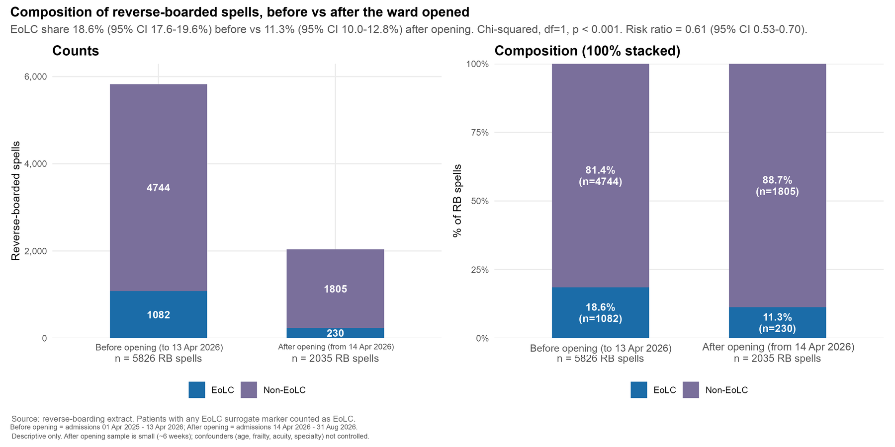
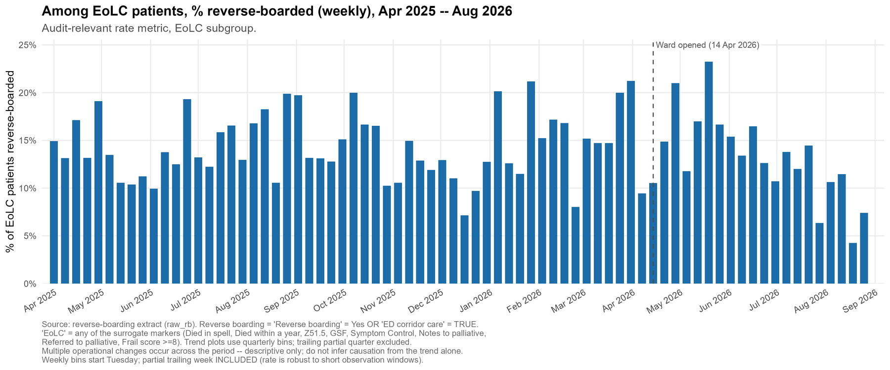
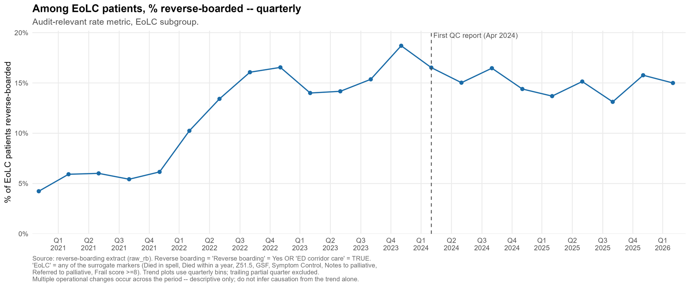
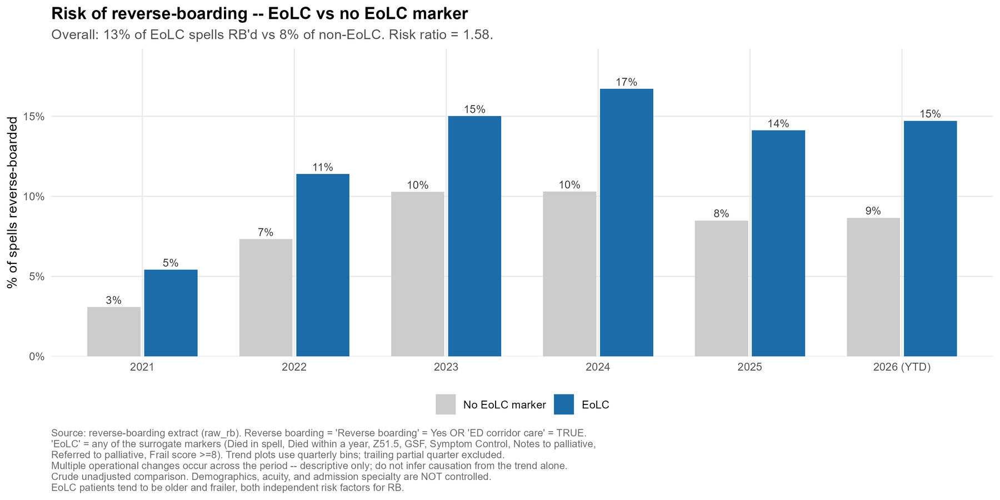
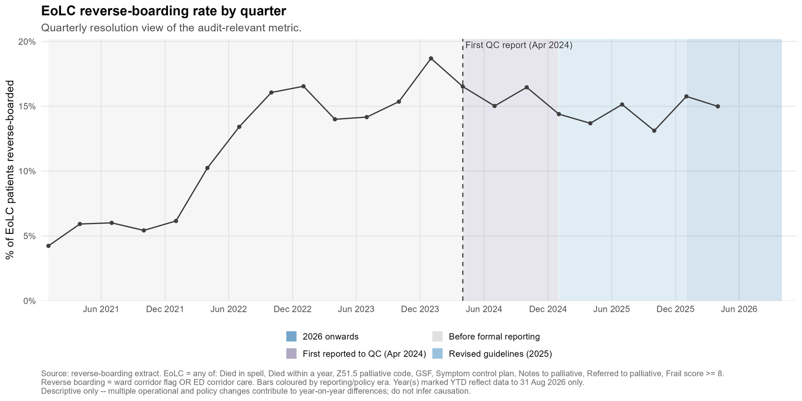
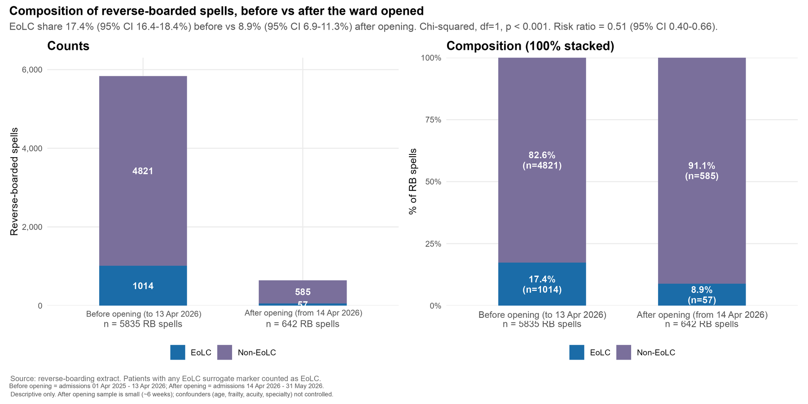

Ending corridor care for the dying: figures updated to 31 August 2026
The accepted abstract reported reverse boarding of end-of-life patients up to late May 2026, six weeks after the end-of-life care ward opened. This page carries the same analysis rerun on data to 31 August 2026, so that readers of the poster can see how the estimate has moved with a longer follow-up. Cambridge University Hospitals NHS Foundation Trust; registered service evaluation PRN8341.
Abstract figures and updated figures
| Measure | Abstract (to May 2026) | Updated (to 31 Aug 2026) |
|---|---|---|
| Reverse-boarded spells, before and after the ward opened | 5,835 and 642 | 5,826 and 2,035 |
| End-of-life share of reverse-boarded spells | 17.4% to 8.9% | 18.6% to 11.3% |
| Rate ratio (95% confidence interval) | 0.51 (0.40 to 0.66) | 0.61 (0.53 to 0.70) |
| Weekly end-of-life reverse-boarding events | 21.4 to 12.4 | 20.0 to 11.5 |
| Post-opening observation | about 6 weeks | 20 weeks |
Two cautions. The end-of-life share in the pre-opening year has risen from 17.4% to 18.6% on the same window, because the "died within a year" marker matures as deaths are registered; the post-opening share will drift upwards in the same way. And the final three weeks of August show a fall in all reverse boarding that may reflect data lag; excluding them, weekly end-of-life events average 12.9.
Updated charts





Abstract-period chart, for comparison
